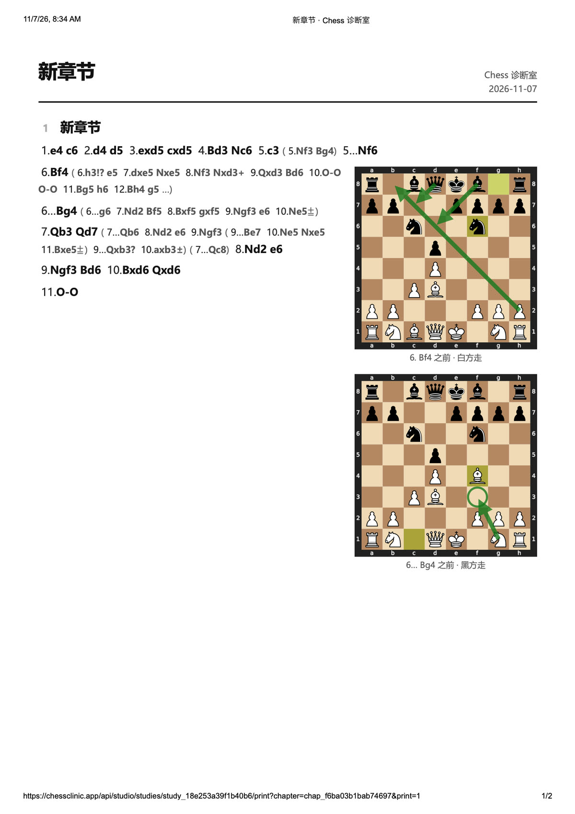
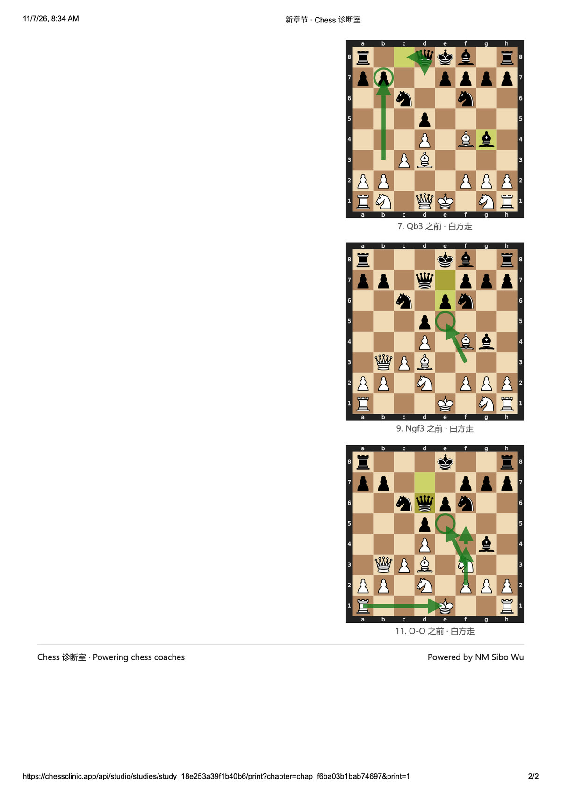
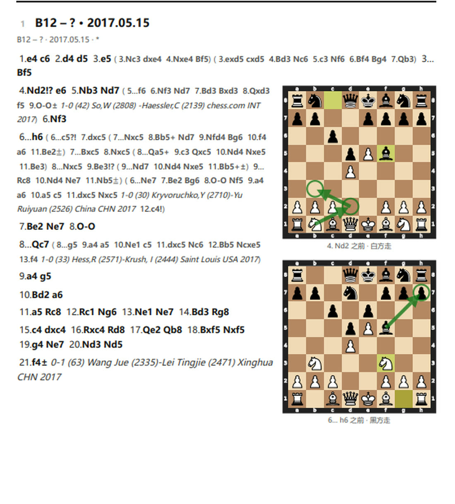
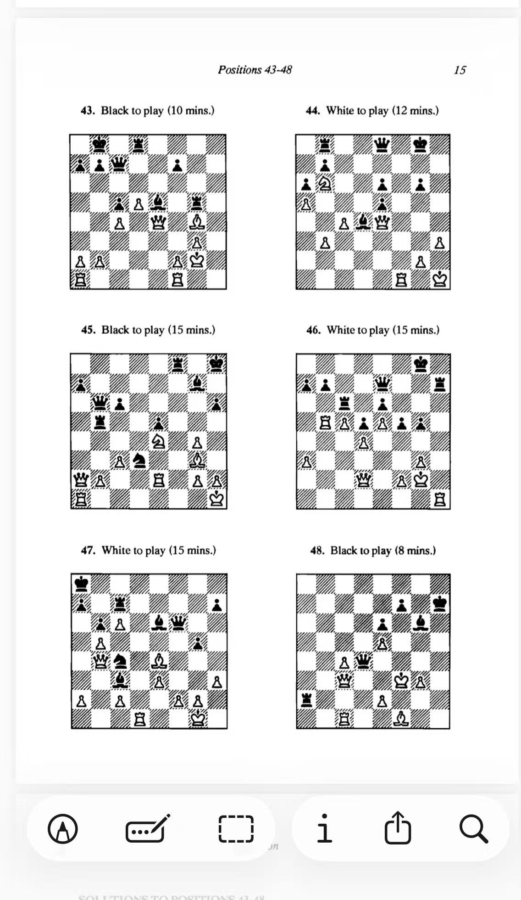

Two studies from Coach Dong — every line on a board you can play
What this is. Coach Dong sent two study chapters on the Caro-Kann — the defence that answers 1.e4 with 1…c6. One covers the Exchange, where White trades in the centre straight away; the other covers the Advance, where White pushes past and keeps the position closed. Every line he wrote down is on a board below, so you can play it instead of reading it.
The study sheets themselves are at the bottom of the page if you want the original.
B13 · 1.e4 c6 2.d4 d5 3.exd5 · you're playing White here
This one is a setup, not a trap. White takes on d5 at once and the pawns go symmetrical, so nobody is about to get mated. What decides it is where the pieces go, and the study has an order for that: Bd3 before c3, Bf4 outside the pawn chain, and then Qb3 hitting b7 and d5 at the same time.
▶ Live board. The main line, move by move:
The alternative on move six. Instead of 6.Bf4, White can spend a move on 6.h3!? to stop …Bg4 before it ever happens. The cost is that Black gets 6…e5! in.
▶ Live board.
And the mistake to know. After 7.Qb3 Black can offer the queen trade with 7…Qb6 — but then taking on b3 is wrong, and the study marks it with a question mark.
▶ Live board.
Two more sidelines from the study, written out in case you meet them:
B12 · 1.e4 c6 2.d4 d5 3.e5 · a complete game, Xinghua 2017
The opposite idea. White pushes past instead of trading, grabs space, and the position stays closed. The move that makes the whole Caro-Kann worth playing comes next: 3…Bf5, getting the light-squared bishop outside the pawn chain before …e6 locks it in. That is the one thing the French Defence can't do.
▶ Live board. The study follows a real game all the way to move 21 — press ▶ and let it run:
Worth noticing how it ended. The study stops at 21.f4± with White better — and Black went on to win in 63 moves. A ± is a verdict on the opening, not on the game.
The break that comes too early. …c5 is the standard Caro-Kann lever, but the study marks 6…c5?! as premature here — White's knight is already on b3 watching that square.
▶ Live board.
The rest of the study's sidelines:
The originals Coach Dong sent, from Chess 诊断室. Tap to open full size.



“Positions 43-48” · page 15 of the third book · side to move printed in words, with a time
Six more positions, from the same book as Positions 7–12 and 19–24 — the one that tells you who is to move and gives you a time limit for each.
▶ Play all six on real boards — the answers are hidden until you've had 10 goes at a puzzle, then the whole line appears.

Careful — these are not the 43–48 you already did. That set was from the first book (all mates, all Black to move, covered on 3 Oct). Same numbers, different book, completely different puzzles.